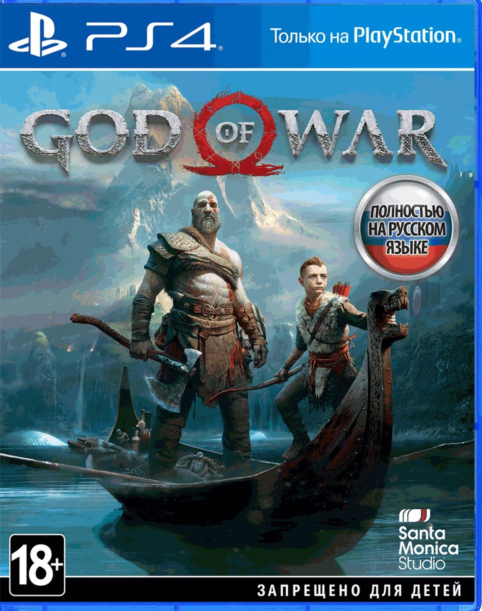
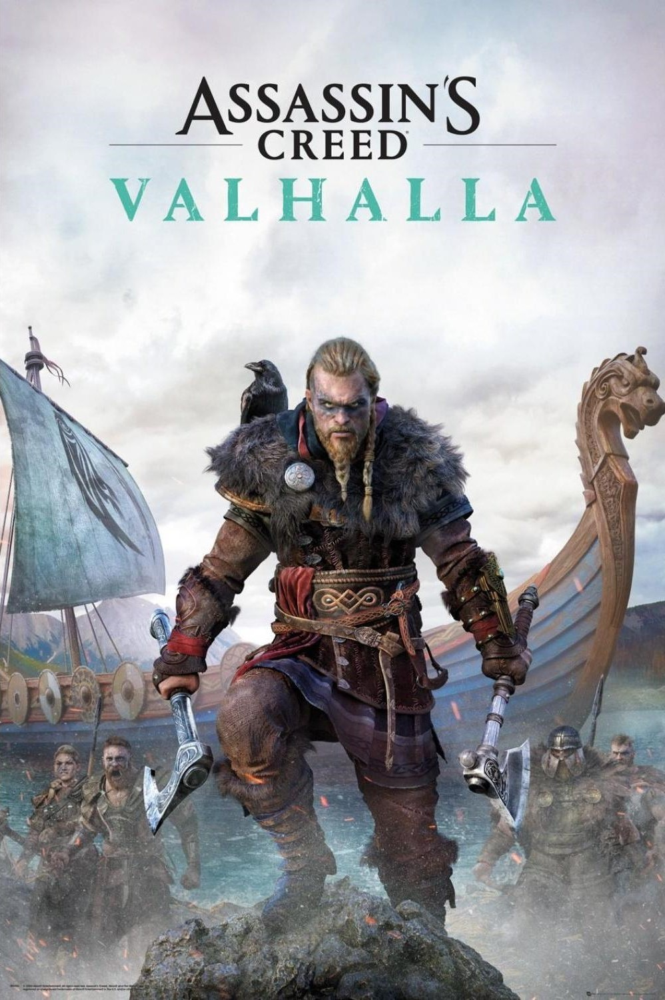
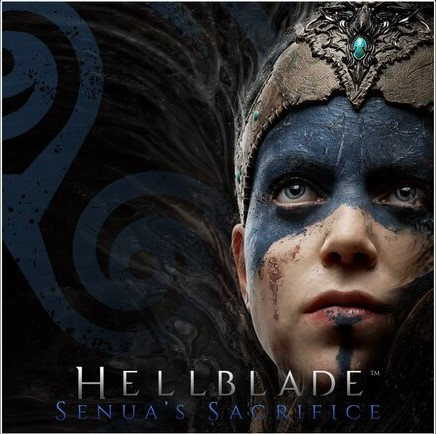
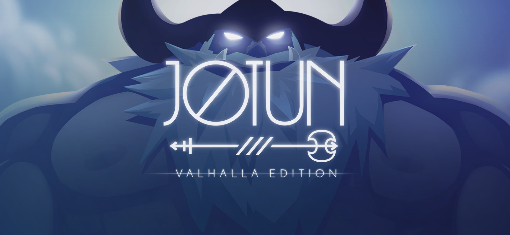
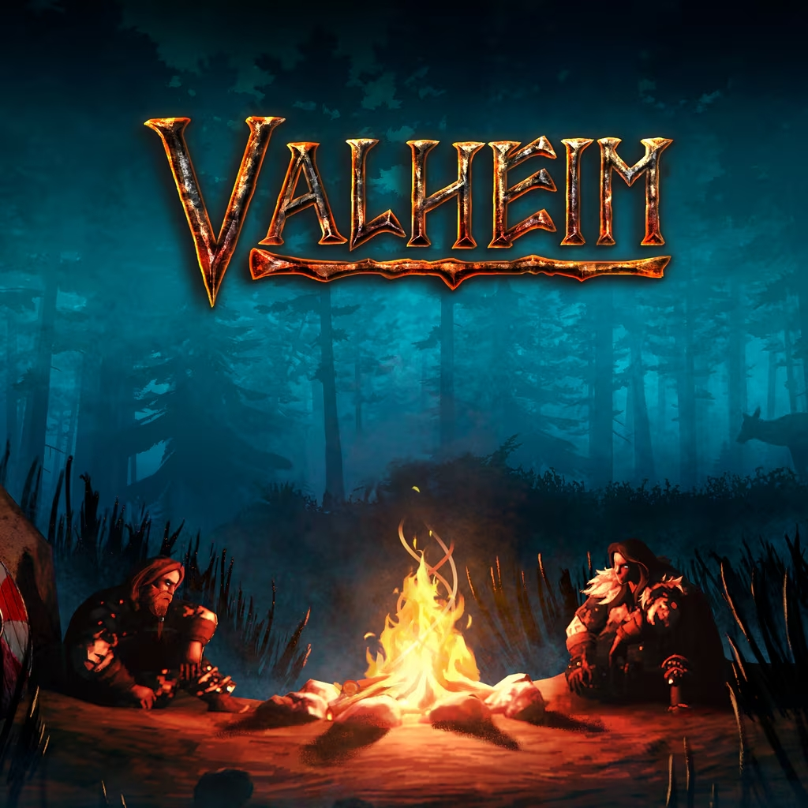
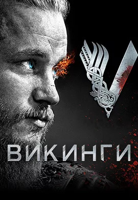
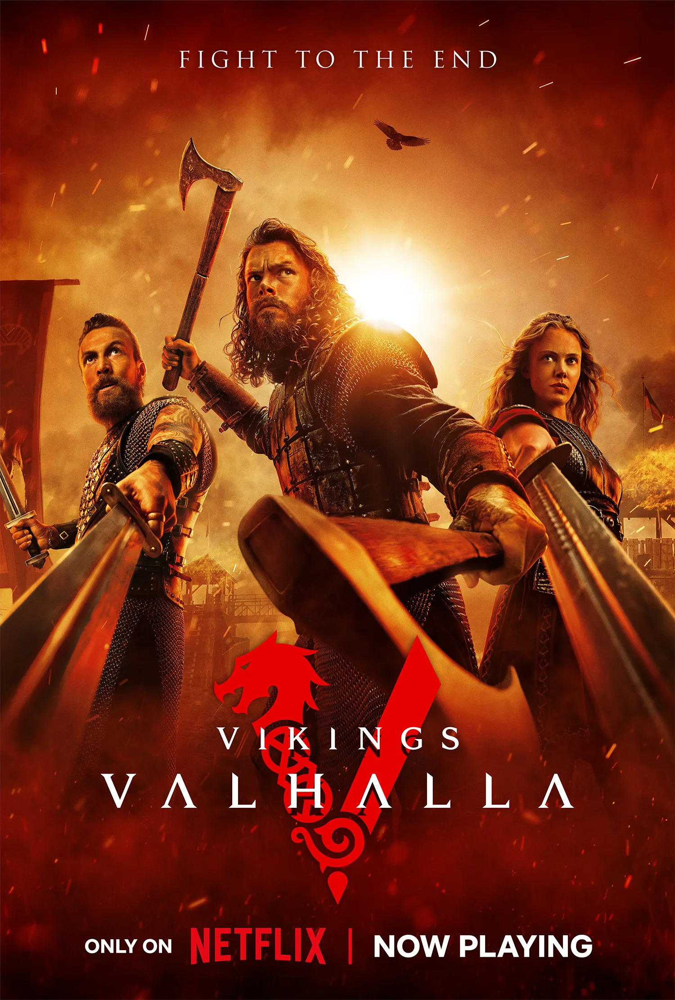
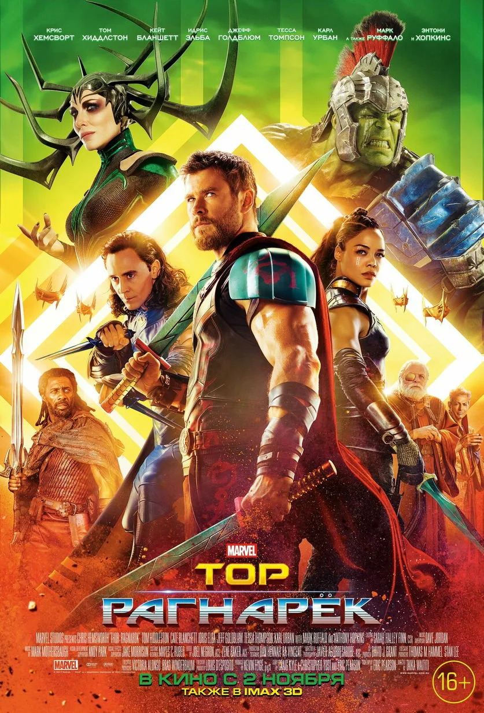
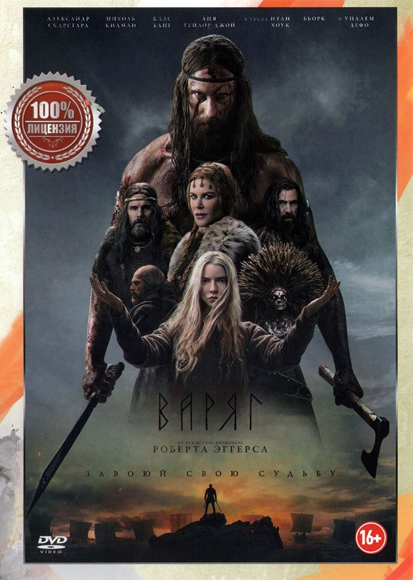

Игры и Фильмы по скандинавской мифологии
Где мифология оживает на экранах и в геймпадах.
🎮 Игры

God of War (2018) и God of War: Ragnarök (2022)
Жанр: Экшен, приключение
Разработчик: Santa Monica Studio
Описание: Кратос и его сын Атрей путешествуют по девяти мирам, встречают богов (Один, Тор, Фрейя), существ и чудовищ. Вольная, но глубокая адаптация мифологии, особенно в части Рагнарёка.
Оценка сайта: ⭐ 10/10
Трейлер →
Assassin's Creed: Valhalla
Жанр: RPG, открытый мир
Разработчик: Ubisoft
Описание: Про викингов, вторжение в Англию, но с мифологическим уклоном: сны-видения, сюжетные линии с Одином, Тором, посещение Асгарда и Ётунхейма.
Оценка сайта: ⭐ 8/10
Трейлер →
Hellblade: Senua's Sacrifice
Жанр: Психологический хоррор, экшен
Разработчик: Ninja Theory
Описание: Кельтская воительница Сенуа отправляется в Хельхейм, чтобы спасти душу погибшего возлюбленного. Глубокая проработка психоза и атмосфера скандинавской загробной жизни.
Оценка сайта: ⭐ 9/10
Трейлер →
Jotun
Жанр: Инди, экшен
Описание: Рукотворная анимация, игра про викингшу, которая доказывает богам свою силу, сражаясь с великанами (ётунами).
Трейлер →
Valheim
Жанр: Выживание, песочница
Описание: Викинги в чистилище должны убить чудовищ и боссов (Эйктюр, Третий, Бономасс, Модер, Яглут). Атмосфера, отсылки к мифологии.
🎬 Фильмы и сериалы

Викинги (Vikings, 2013-2020)
Жанр: Историческая драма
Создатель: Майкл Хёрст
Описание: Про Рагнара Лодброка и его потомков. Мифология присутствует через видения, пророчества и разговоры с богами.
Рекомендация: Первые 4 сезона.
Трейлер →
Викинги: Вальхалла (Vikings: Valhalla, 2022)
Жанр: Историческая драма
Описание: Продолжение, действие через 100 лет. Лейф Счастливый, Фрейдис, Харальд Суровый. Язычники против христиан.
Трейлер →
Тор (Thor, 2011) и Тор: Рагнарёк (2017)
Жанр: Фэнтези, супергероика
Описание: Вольная адаптация Marvel. Рагнарёк как гибель Асгарда от огненного демона Сурта (сильно изменено). Развлекательно, но не исторично.

Северянин (The Northman, 2022)
Жанр: Исторический боевик
Режиссёр: Роберт Эггерс
Описание: Максимально аутентичный фильм о викингах (месть Амлета). Есть элементы ритуалов, сцены с вёльвой, намёки на мифологию.
Оценка: ⭐ 10/10 за атмосферу.
Трейлер →